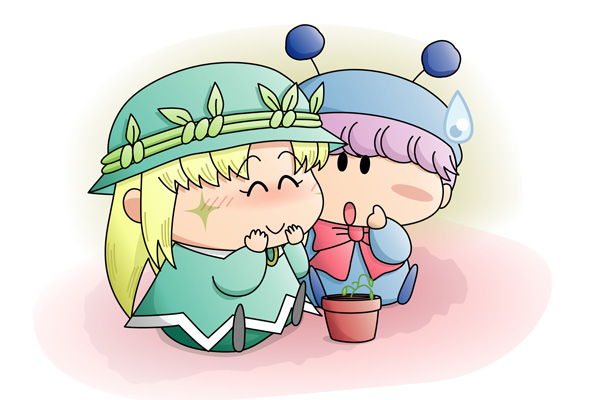

ムルモ「アロマしゃん、お久しぶりでしゅ～」
アロマ「ムルモ様！
突然お呼び出ししてごめんなさい…」
ムルモ「アロマしゃんのためならボクは全然平気でしゅよ。
それでボクに相談事って…何かあったんでしゅか？」
アロマはムルモを部屋へ案内しながら説明します。
アロマ「お花にいくら水をあげても全然元気になってくれないの…」
ムルモ「お花しゃんでしゅか」
アロマ「ムルモ様なら何か出来るんじゃないかなと思って」
ムルモ「これがそのお花しゃんでしゅね。
アロマしゃんでも育てるのが難しいお花だから大変そうでしゅね。
でもボクに任せるでしゅよ！」
アロマ「ホントに！わぁ、とってもうれしいわ」
ムルモ「ところでこのお花は誰かからプレゼントされたものなんでしゅか？」
アロマ「えっ？」
ムルモ「だってアロマしゃんがそこまで大切にしている花でしゅからね。
もしかしてアロマしゃんの恋人からでしゅか？」
アロマ「わわ、恋人だなんて…」
ムルモ（ちっ、図星でしゅ。
アロマしゃんが好きな男ってのはいったいどんなやつでしゅかね？
まぁここは手っ取り早く魔法をかけてみるでしゅ）
ムルモ「それでは王家に伝わる魔法をかけてみるでしゅよ。
ボクの魔法でお花しゃんも元気になるはずでしゅ」
アロマ「ムルモ様、がんばって」
ムルモ「ムル、ムル、ムルモでポン！」
|
前回のアロマ(2)でアンケートを行ったところ、「（５）ムルモに相談する」が最多票（と言っても２票ですけど^^;）となりましたので、今回は我らがムルモさんに登場していただきました(^^)。アニメではアロマちゃんのかわいさに緊張したり癒されたりという反応を見せたムルモなので、今回もきっとアロマちゃんの力になってくれるはずでしょう。でも途中でアロマちゃんの恋人のためであることを知ったムルモは果たしてやる気があるのか無いのか…(^◇^;)。 今回も次の展開についてアンケートを行います。今回は投票フォームを用意してみましたのでぜひお気軽に投票してくださいね。なお１日に１票投票出来るようになっていますので、毎日１票ずつ投票するのも可能です(^^)。 2006.5.30追記 |
(2006/5/22)